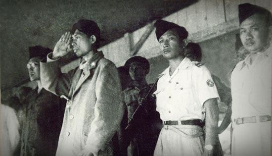

| Nama Pahlawan | Deskripsi | Media |
|
Soekarno |
Dr. (H.C.) Ir. H. Soekarno1 (ER, EYD: Sukarno, nama lahir:
Koesno Sosrodihardjo; 6 Juni 1901 - 21 Juni 1970) adalah Presiden pertama Republik Indonesia yang menjabat pada periode 1945-1967. Ia adalah seorang
tokoh perjuangan yang memainkan peranan penting dalam
memerdekakan bangsa Indonesia dari penjajahan Belanda.
Ia adalah Proklamator Kemerdekaan Indonesia (bersama dengan
Mohammad Hatta) yang terjadi pada tanggal 17 Agustus 1945.
Soekarno adalah yang pertama kali mencetuskan konsep mengenai
Pancasila sebagai dasar negara Indonesia dan ia sendiri yang
menamainya
|
|
|
Jendral Soedirman |
Jenderal Besar Raden Soedirman adalah seorang perwira tinggi Indoensia pada masa Revolusi Nasional Indonesia. Menjadi panglima besar Tentara Nasional Indonesia pertama, ia secara luas terus dihormati di Indoensia. Terlahir Dari pasangan rakyat biasa di Purbalingga Hinda Belanda, Soedirman diadopsi oleh pamannya yang seorang penyanyi. |
 |